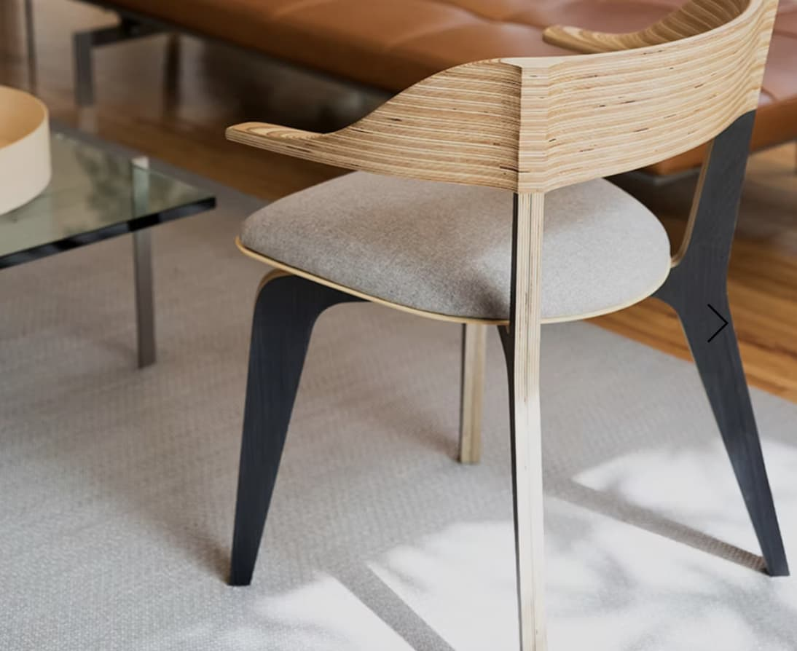

Con líneas simples y una estructura ligera, esta pieza refleja el diseño industrial contemporáneo en México. Pirwi apuesta por procesos eficientes y materiales duraderos para el uso cotidiano.
Precio: aprox. $20,500 MXN